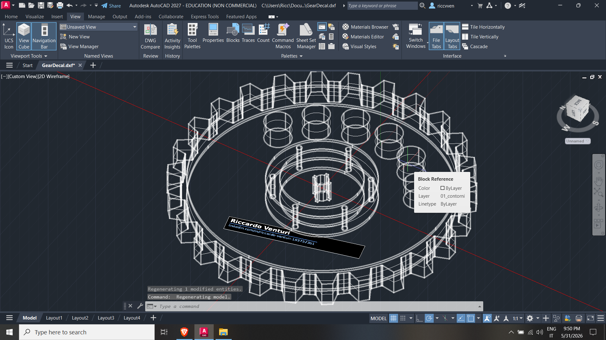
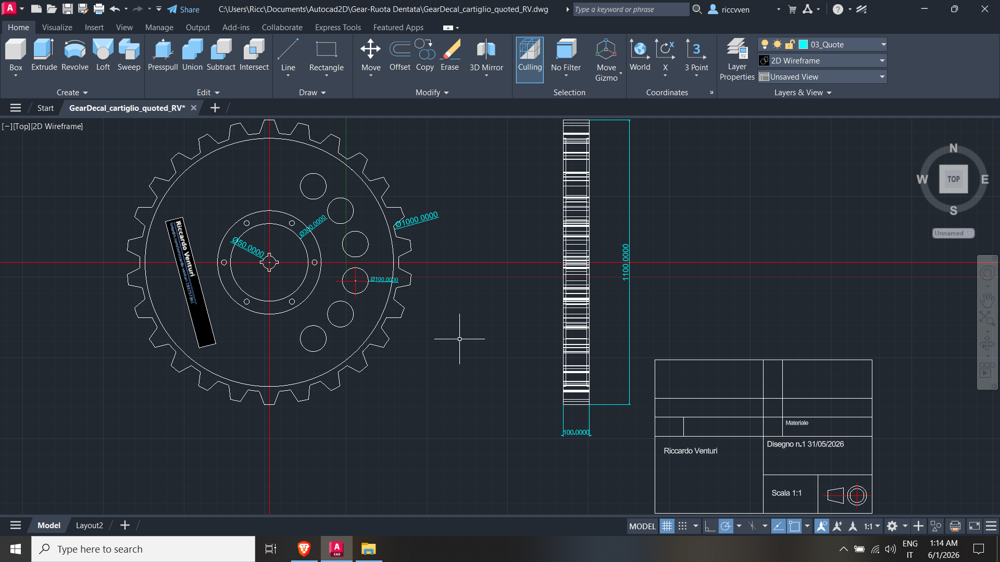

Modellazione 3D con Autocad 2D, in wireframe ed elaborazione del relativo disegno tecnico bidimensionale quotato. Layout strutturato con cartiglio e indicazioni dimensionali precise per la produzione del componente meccanico.
